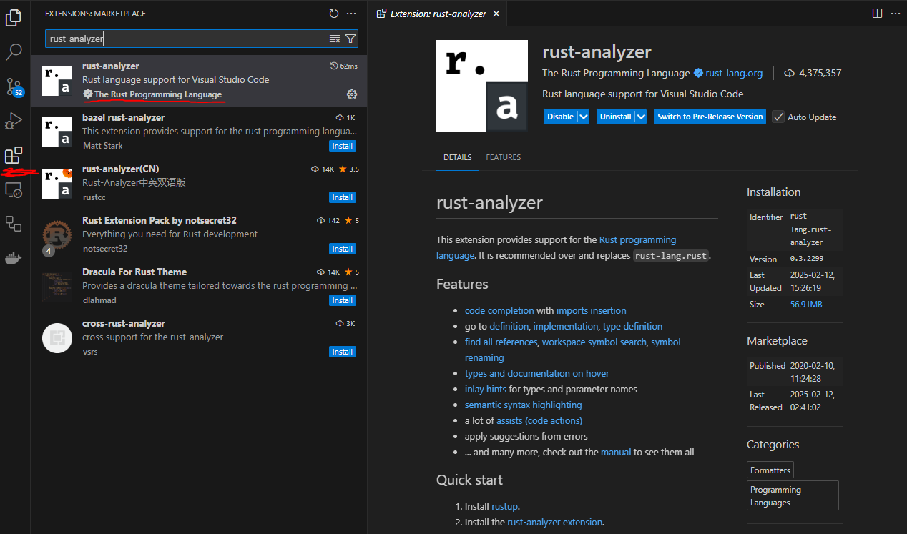

Rust
You can use Rust language with your Windows, Mac or Linux device. The installation happens through the rustup tool.
To install Rust, rustup, open the link: https://www.rust-lang.org/tools/install
Windows-tutorial
For a Windows device, use the installer:

The installer is available for 32 and 64-bit computers. If your computer is only a year old, it's 64-bit, it's worth paying for the 64-bit version, because it's a bit faster.
To check the bit version of your Windows 10 and Windows 11 computer, open Windows Settings -> System -> About. The bit version can be found under "System type":

Linux-installation guide
The link to the installation command for the Unix version can be found here: https://forge.rust-lang.org/infra/other-installation-methods.html#other-ways-to-install-rustup.
Command:
curl --proto '=https' --tlsv1.2 -sSf https://sh.rustup.rs | sh
MacOS-guide:
MacOs uses the same command as Linux: https://forge.rust-lang.org/infra/other-installation-methods.html#other-ways-to-install-rustup.
Command:
curl --proto '=https' --tlsv1.2 -sSf https://sh.rustup.rs | sh
Version checking
After installing Rust, open a command prompt and run the command:
rustup --version
rustc --version

If the installation was successful, the output should be similar to the image, the version number should be printed with the rustup command and the rustc command.
Opening the command prompt:
Windows:
Windows + R -> "cmd" -> press enter

VSCode:
You can open a command prompt inside VSCode as shown in the picture.

A command prompt opens in the lower corner. In Windows, the command prompt is usually either PowerShell or Command Prompt.
Useful Rust-extension for VSCode
A useful add-on rust-analyzer is available for VSCode, which speeds up finding documentation and correcting errors by providing useful information even before compiling the program.
You can also install rust-analyzer on other programming environments - more detailed instructions can be found on the rust-analyzer documentation page under Installation.
From the image below, we can see how to install rust-analyzer in VSCode.
From the left sidebar, we select extensions, search for rust-analyzer, and press "Install" in the window that opens to the right. The page contains links to configuration, the documentation page and a list of features.

The Rust analyzer can be easily configured by adding the file "{folder_name}.code-workspace" to the folder you created for the weekly tasks, for example, and adding all folders containing Rust projects created with the cargo tool. In the example image below, there are two subfolders of the weekly tasks folder, both of which contain individual cargo projects that rust-analyzer can identify.

When you have created a new project with the cargo new command and the rust-analyzer is installed, VSCode should allow you to run the program by pressing the button above the main function (see the picture below), as well as provide information about different commands when you hold the mouse over, for example, a well-known macro or standard library function, method or macro. When the mouse is hovered over, for example, the println! macro, VSCode gives the information below:

When you run the above program, the rust-analyzer command prompt opens, which gives the execution and remains open until you close the terminal by pressing any key.

Note!
If your program requires the use of command line arguments, you must run your program with the cargo run command so that you can run the program with the arguments you provided.